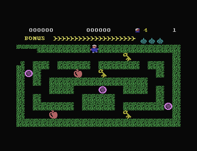

01 · Score arithmetic
Bug: a pickup can lose points at a digit boundary
An apple has a face value of 300 points. At a score of 800, collecting one displays 1000. The remaining 100 points disappear.
This JavaScript score model is compared with the original code for 30,000 score/pickup combinations. The 800 + 300 case also produces 1000 in plus4emu. This is a controlled arithmetic demonstration.
The score is stored as six separate digit characters at memory address $12F2. An address names a position in memory. A leading $ marks a hexadecimal number, written with digits 0–9 and A–F. The adder at $1301 replaces an overflowing digit with zero and carries one into the next digit. Replacing eleven with zero loses the remainder that ordinary decimal addition would keep.
Layout five has seven apples whose face values add up to 2100. Adding all seven from zero gives 1900. On mixed-object layouts, the previous score and collection order can change the final gain. The values on the Levels tab are face-value sums.
02 · A repeatable input route
Bug: a bomb at the exit can take every attempt
Hold SPACE from the first maze without moving. Cuthbert plants a bomb at the starting exit and detonates it when its delay expires. Each death returns Cuthbert to that same exit while the explosion remains active.
The death routine at $19AB resets the player and timer, but leaves the active bomb in place. The next pass updates that bomb before checking player contact. The fire pictures last long enough to consume all five initial attempts.
Holding fire also explains why a long press can appear to detonate a bomb immediately after placement: the code checks whether fire is still held after the delay. The same continuous press can both place and detonate the bomb.
03 · A character used as a counter
Bug: an extra life can open the machine's monitor
The extra-life limit compares a digit character with the number eight. The digit 8 is stored as $38, while the comparison uses $08. The stored character can keep increasing beyond the digits. Eventually the error opens the monitor, the C16's built-in tool for examining memory.

The experiment reproduces 204 calls to the original code that awards a life. The final boundary is also verified in plus4emu by setting the preceding value to $FF. It does not represent a played route to that score.
The last nonzero value, $FF (255), allows 208 attempts. The next award wraps it to zero. That zero also ends the little text string used to draw the life counter.
The text-printing code returns one byte early, to another zero at $1A27. A byte stores a number from 0 to 255. When the processor reads this zero as an instruction, it means BRK, a request to stop normal execution. The C16's normal break handler opens its monitor and prints BREAK.